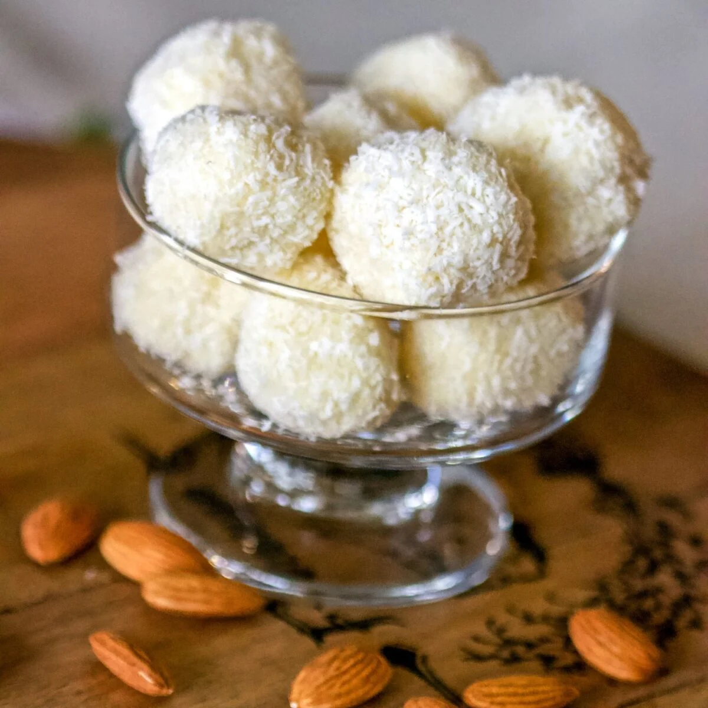

Raffaello
Hozzávalók
- 3 evőkanál liszt
- 3 deciliter tej
- 5 evőkanál cukor
- 1 csomag vaníliás cukor
- 10 dekagramm vaj
- 15 dekagramm kókuszreszelék
- 1 csomag egész mandula

Elkészítés
- A lisztet a tejjel csomómentesre keverjük, hozzáadjuk a cukrot és a vaníliás cukrot, majd sűrű krémmé főzzük.
- Beledolgozzuk a vajat és hozzákeverjük a kókuszreszeléket.
- 1-2 óra alatt lehűtjük, majd kis golyókat formázunk belőle, a közepébe belenyomjuk a mandulát, és kókuszreszelékbe forgatjuk.